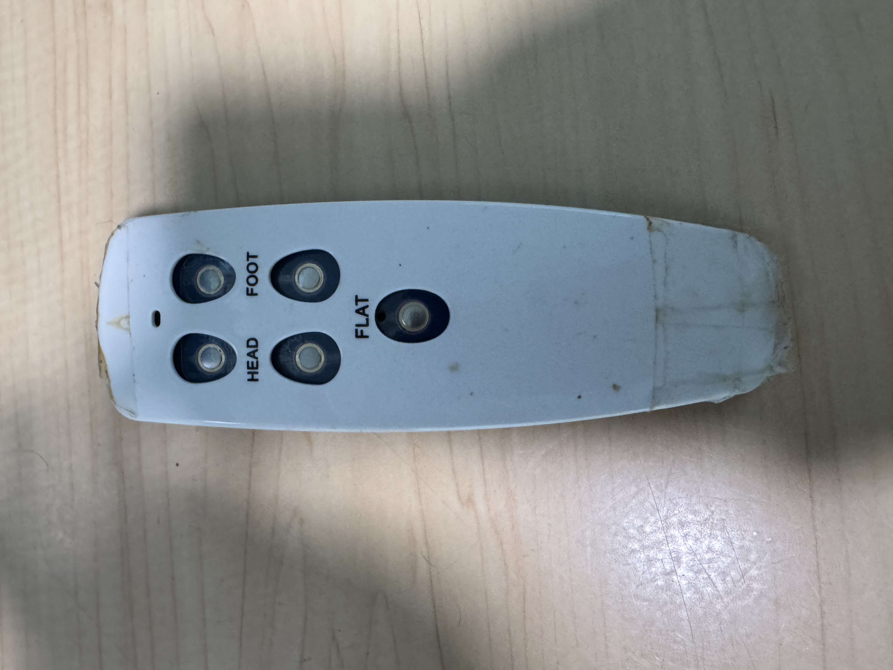
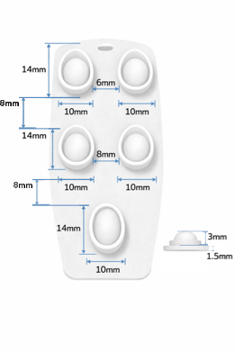
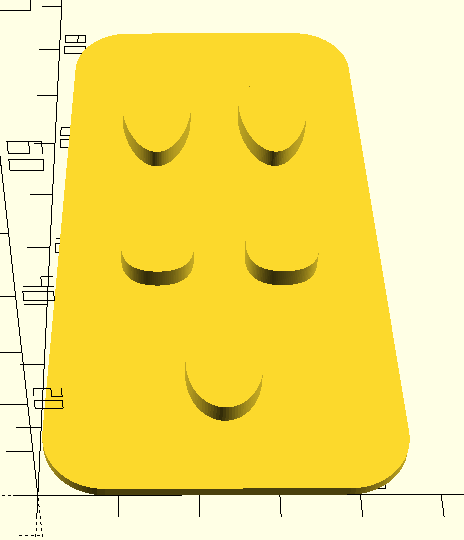
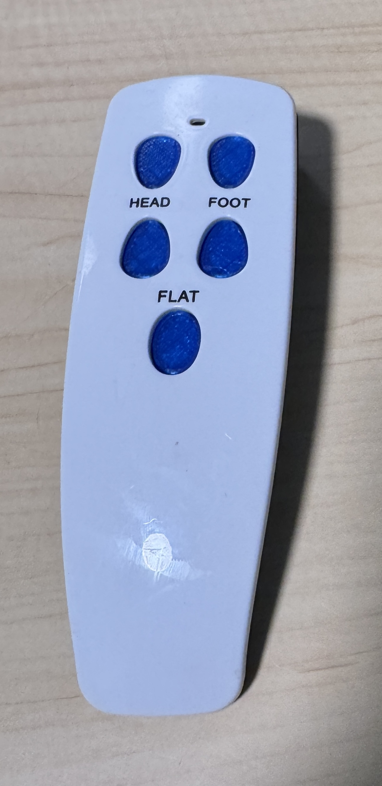

Pro subscriber to Claude, ChatGPT, and Grok. I know which tool does what best — and when the AI is wrong.
Anyone can list the AIs they pay for. What matters is what makes it out the door. Here's what's live — each one built with AI as a force multiplier, not a novelty.
The iceberg most people don't see. From the Annual Bible Lectureship app presented at University Scholars Day (2015) and Food Fight at SDX, through EiValue at Energy Sense Finance, Wired at It Works!, Vimvest and Monorail (still live), side projects like RedSwipe and Casanova, and finally CBS Sports — where the app reaches millions daily. See the full timeline →
A four-seat AI writers' room that watches YouTube with you and reacts in real time. Built in response to a $5,000 open bounty from Jason Calacanis and Lon Harris on This Week in Startups. Multi-provider LLM stack, rule-based Director routing, sub-300ms transcription. peanutgallery.live
A SwiftUI incremental game, two years in the making. Zero third-party dependencies, CloudKit sync, targeting Apple Arcade. Full AI-assisted pipeline from architecture to art. See the build →
Developer-implemented SEO for a roofing company, a dual-language academy, and a WNC real estate broker. Schema, Core Web Vitals, crawlability fixes — AI-augmented research, hand-finished code. See the approach →
Channel manager and video editor for a children's YouTube channel grown to 30,000+ subscribers. AI-assisted thumbnail iteration, title testing, and pipeline cuts — where machine-speed iteration compounds into audience growth.
Each of these required different tools for different jobs. The skill isn't in subscribing to every AI platform — it's in knowing which one to reach for, when to trust the output, and when to throw the generated code away and write it yourself. Fluency beats inventory.
How I used AI to 3D print a missing part for a bed remote
Described the problem and measurements. Claude generated OpenSCAD code for the replacement parts.
Rendered and refined the 3D model, iterating on dimensions until the fit was precise.
Exported the verified model as an STL file for 3D printing. Download the STL
Sliced the STL into printer instructions. Printed on a consumer 3D printer.
Perfect-fit replacement part. Remote works like new.




Building Manu Idle was a full-stack AI experiment — not just one tool, but an entire pipeline of AI platforms each handling what they do best. Here's how AI shaped every stage of development.
My go-to for rapid-fire questions, coding assistance, and creative direction. Grok helped generate ideas, troubleshoot SwiftUI issues, and even script the game trailer.
Used for generating specific game art concepts and visual assets. The Images 1.5 model made it possible to iterate on art direction quickly without a dedicated artist.
The engine that pushed the project from alpha to finish. Claude handled heavy code generation, architectural decisions, and helped ship features fast — turning weeks of work into days.
Generated the majority of in-game images and visual assets. Leonardo's fine-tuned models produced game-ready art that matched the style and tone of Manu Idle's world.
Converted generated images to transparent PNGs — essential for layering game assets cleanly over dynamic backgrounds without manual masking.
The consistency tool. Nano Banana ensured images sharing the same type looked identical where needed — matching proportions, colors, and style — while still allowing major changes between asset categories.
A four-seat AI writers' room that watches YouTube with you and reacts in real time. Built in response to Jason Calacanis and Lon Harris's $5,000 open bounty on This Week in Startups — a Chrome Manifest-V3 extension that captures tab audio silently, transcribes it, and routes each chunk through a rule-based Director that picks which of four AI personas fires next. Live at peanutgallery.live and on the Chrome Web Store.
Powers the reasoning-heavy personas: a fact-checker that scores sentences, fires search queries, and returns corrections with attribution — plus a comedy writer that applies eight joke techniques to generate data-driven punchlines. Also drives the optional LLM-assisted persona router within a 400ms budget.
Anthropic's Claude Design agent collaborated on the v1.5 "Broadsheet" rebrand — iterating on typography (Anton, Oswald, Special Elite, Source Serif 4), the cream-paper-and-ink palette, and the newsprint composition grid. Claude Design shaped the look; I engineered the behavior.
Powers the reflexive personas — the contrarian provocateur and the bracket-delimited sound-effect caller. Non-reasoning model chosen for punchy, low-latency output where speed matters more than deliberation.
Streams PCM audio from the tab capture through a WebSocket for sub-300ms first-byte transcription. The latency budget is what makes the whole experience feel live instead of delayed.
User-selectable search backends for the Producer persona. Claude Haiku scores claims, fires parallel search queries, and cross-references results before returning corrections with citations — turning the extension into a live fact-checker, not just a commentator.
The moat. A rule-based "booth producer" scores each transcript chunk against persona specialties, picks a lead, then cascades to others with staggered timing and decreasing probability (50% → 35% → 20%). Creates natural variation — some moments get one reaction, others a pile-on. This is where "four AIs" becomes "a writers' room."
Using AI to write, review, and refactor code across Swift, Python, JavaScript, and more.
Generating OpenSCAD models, STL files, and G-Code for 3D printing solutions.
AI-augmented keyword research, content optimization, and competitive analysis.
Deep research across multiple AI models, cross-referencing outputs for accuracy.
Building AI-powered pipelines that connect multiple tools and platforms.
Using AI to go from idea to working prototype faster than traditional development.
AI doesn't replace expertise — it multiplies it. A decade of software development means I know what to ask for, how to evaluate the output, and when the AI is wrong. That combination of deep domain knowledge and AI fluency is rare, and it's what I bring to every project.
I'll show you how to cut research time in half and ship faster.
Get in Touch